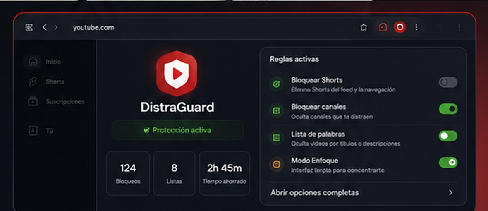
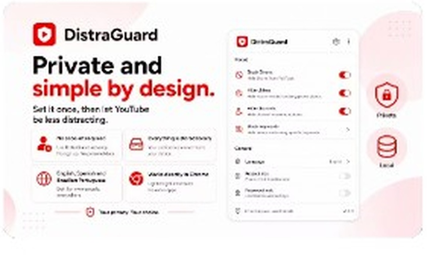
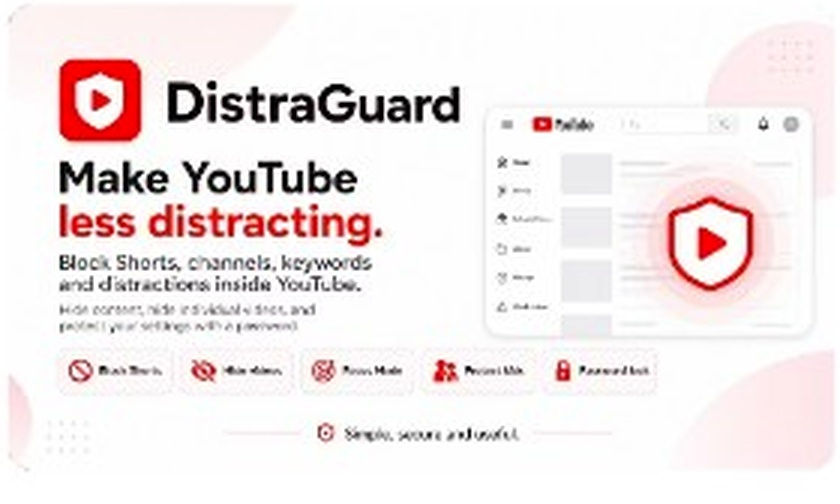
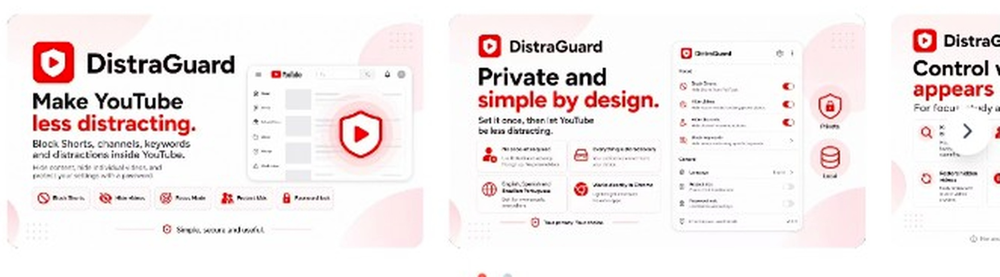

Bloquear Shorts
Oculta accesos, tarjetas y secciones de Shorts dentro de YouTube.
Controlá Shorts, canales, palabras y distracciones sin dejar de usar YouTube. Elegís qué ocultar, cuándo pausar las protecciones y qué configuración querés bloquear.


DistraGuard no reemplaza YouTube: actúa encima de su interfaz y aplica las reglas que elegís para que el contenido distractor deje de ocupar el centro.
Oculta accesos, tarjetas y secciones de Shorts dentro de YouTube.
Oculta recomendaciones y comentarios mientras mirás videos.
Filtra videos según palabras o expresiones presentes en sus títulos.
Permite sacar del feed el contenido de canales completos.
Ocultá videos puntuales desde sus miniaturas y restauralos después.
Suspendé las protecciones sin perder listas, reglas ni configuración.
Protegé los cambios para evitar que las restricciones se modifiquen fácilmente.
Consultá Shorts, videos y canales bloqueados desde la extensión.
La extensión concentra las protecciones y accesos principales en una experiencia compacta: activar, pausar, revisar reglas y volver a YouTube.
La política actual de DistraGuard indica que las preferencias, listas, videos ocultos, estadísticas y datos derivados de la contraseña se almacenan mediante las API de almacenamiento de Chrome. El desarrollador no mantiene servidores que reciban esos datos.
Leer política de privacidad completa ↗No necesitás crear una cuenta de DistraGuard para usar la extensión.
La información visible de YouTube se procesa para aplicar las funciones elegidas.
La contraseña original no se guarda en texto visible; se usa un verificador derivado.
La política declara que no utiliza herramientas de análisis o seguimiento.
DistraGuard fue presentada como una herramienta para usar YouTube con más control, manteniendo una experiencia simple y centrada en privacidad.


Datos actuales de la ficha oficial.
Instalá DistraGuard desde Chrome Web Store y elegí qué distracciones querés sacar del medio.